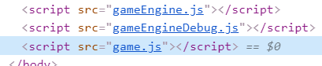

VNCTF-EZ-GAME
#前言
打开又是一个游戏，咋都这么爱出游戏，上次HCTF的大西瓜，这次的这个又是一头雾水
这是一个前置知识，一个新姿势，我感觉还是暴力破解的方法最直接！！！
主要是想讲一下，那个js串是怎么得到的
因为是js混淆嘛，肯定是要从js中找，下面有三个js，就三个都找。
问题是不知道比赛的时候有没有这个hint，如果没有那么我们是如何在js中那么长的代码中找到这个
于是
又是另一种方法
上次的大西瓜都是在js代码中查找问题，搞懂js代码应该是去通过题目的关键
先来看看这道题目吧，这个游戏一打开确实我不懂这是怎么玩的
有一个小提示
When life gets you down,
it's never too late to...
B O U N C E B A C K
A JS13k 2019 Game
By Frank Force
WASD = Move
Mouse = Aim
Click = Throw
Space = Dash
Hints
- You will keep money after you die!
- You won't take damage while dashing.
- There are 10 levels.
- Sand slows down you and enemies.
- Yellow boormang can grab pickups.
- Blue boomerang does double damage.
- Beat the game to unlock speed run mode.大概的意思是w a s d是移动，点击鼠标释放工具，空格是短暂的加速
死后你会存钱！ 冲刺时不会受到伤害。 这有十关 沙子减慢了你和敌人的速度（玩了这么长时间，没有见到过沙子，不知道只的是啥）黄色的boormang可以抓取皮卡 蓝色回旋镖造成双倍伤害 击败游戏以解锁速度运行模式。
那当然就是通关拿到flag，最开始我玩了一次，就感觉跟HCTF那个大西瓜一样，靠自己根本就过不了，也可能是我太菜。
然后一般游戏，我们都应该去找它的js

有三个js，前两个是engine，应该跟解题没有什么关系
就看一看game中那个函数有助于我们快速通关，因为以前没有接触过js，所以我看这个感觉很难
就逐步分析下
let 语句声明一个块级作用域的本地变量，并且可选的将其初始化为一个值
let startLevel=0;
let level;
let levelNumber;
let nextLevel;
let warpLevel=0;
let isFinalLevel;
let isStartLevel;
let levelTimer = new Timer();
let endLevelTimer = new Timer();
let levelExit;
let loadNextLevel;
let levelMaze = [];
let levelMazeSize = 4;
let levelColor = new Color();
let levelFrame;
let boss;
let player;
let playerData;
let playerStartPos;
let winTimer = new Timer();
let healthWarning = new Timer();
let buyTimer = new Timer();
let mainCanvas = c1;
let speedRunMode;
let speedRunTime=0;
let speedRunBestTime=0;
let coinSoundTimer = new Timer();·
class PlayerData
{
// track player data between levels (when player is destroyed)
constructor()
{
this.health = 3;
this.healthMax = 3;
this.boomerangs = 1;
this.bigBoomerangs = 0;
this.coins = 0;
}
}在关卡之间追踪玩家数据（玩家被消灭时），所以如果当玩家死了的时候，就会执行这个类，因为里面有一个生命，生命最大值，回旋镖，大的回旋镖，所以我们可以合理的猜测，如果我们改变了这些值，保存后，当我们玩游戏失败后，就可以在下一盘利用这些值
1 |
|
我认为这道题比较仁慈的一点是它会在每个函数（不确定是不是函数），加上这个东西的作用
如果我们一直在控制台输入NextLevel()，那么我会就会进入下一关，但是在第十关的时候我们必需打败怪物才能得到flag，所以我们可以先去送死一次，刚才的修改我们可以得到很大的属性值，然后可以打败怪物
然后我感觉下面我们可以去找一下winTimer，因为在let里面有哪个
1 |
|
我们可以看到，当player.win的时候，会执行一个winTimer.Set();，我们直接在运行台输入，就可以得到flag
#后记
游戏的题目一般都会跟JS有关，可以在空闲的时候对JS有个了解，不至于一点都看不懂
当出现题目是游戏的时候，我们应该首先搞懂这个游戏是怎么玩的，然后看JS里面有没有跟通关这个游戏有关的函数代码，或在控制台中运行，在源代码中修改然后保存，不要刷新界面，否则会丢失数据